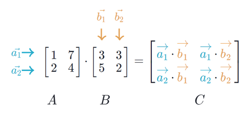

A lot of content summarized from Mark Schmidt’s notes on Linear Algebra
Notation
Generally column major
- Scalar (1,1):
- Column Vector (m, 1):
- Row Vector (1, n):
- Matrix (m, n):
Operations
Transpose
A matrix is symmetric if
Vector Addition
Associative (brackets don’t matter) and commutative (order independent)
Scalar Multiplication
Associative (brackets don’t matter) and commutative (order independent)
Inner Product
Between two vectors of the same length, multiply each element together to get a scalar result
A specific version of this is the dot product which can be expressed as the inner product between two vectors,
- Commutative:
- Distributive across addition:
Outer Product
Between two vectors of the same length, create a matrix multiplying each combination of elements in each vector.
Given two vectors and ,
The resulting matrix is always rank-1.
Multiplication
In general, we can multiply matrices A and B when the number of columns in A matches the number of rows in B
If A is (m, n) and B is (n, p), then AB is (m, p)

- Associative:
- Distributive across addition:
- Generally not commutative:
- Transposing reverses order:
- Matrix powers don’t change order:
- Matrix-vector multiplication always yields a vector:
Properties
Vector Norm
A scalar measure of a vector’s length
-
-
-
Euclidean Norm (L2-Norm):
- Also note that
-
Manhattan Distance (L1-Norm):
- How many ‘blocks’ you need to traverse
-
L-Norm:
- How many blocks you have to walk in any one dimensions
Rank
- The dimension of the vector space generated (or spanned) by its columns.
- This corresponds to the number of linearly independent columns of A.
- This minimal set of vectors that span a space is called a basis
Orthogonal
If for some set of vectors :
- , we call and orthogonal
- , we call and orthonormal
Inner product of square orthogonal matrices is the identity matrix:
Linear Dependence
A vector is linearly dependent on a set of vectors if it can be written as a linear combination of them
A set of vectors is linearly dependent if and only if the zero vector can be written as a non-trivial combination of any of the vectors.
A matrix with fully independent columns has full column rank. If this is the case, implies that
Special Matrices
Identity Matrix
1’s on the diagonal and 0’s otherwise. denotes an (n,n) identity matrix.
Multiplication by the identity matrix yields the original matrix. Columns of the identity matrix are called elementary vectors.
Diagonal Matrix
Spaces
Range (Column-space)
Subspace spanned by the columns of a matrix.
A system is solvable if and only if b is in ’s column-space
Subspace
A non-empty subset of vector space that is closed under addition and scalar multiplication
Possible spaces of
- 0 Vector
- Any line or plane through the origin
- All of
We say that the vectors generate or span the subspace when you can reach any point in the subspace through a linear combination of the vectors.
Matrices as transformation
Viewing
A linear transformation can’t move the origin. But, if there are linearly dependent columns, there are non-zero vectors that can be transformed to zero. The set of vectors that can be transformed to 0 is called the null-space.
Null space: is all such that
Fundamental Theorem of Linear Algebra
- is the dimension of the column-space which is the same as the dimension of the row-space
- The null-space is orthogonal to the row-space
Inverses
We can find the inverses if and only if A is square and doesn’t have null-space outside of the zero vector (otherwise we either lose information to the null-space or can’t get to all vectors)
If the inverse exists, it is a unique matrix such that
Some identities
- Assuming both and exist,
Special inverses of diagonal matrices
Solving Linear Equations
Given A and b, we want to solve for x in
Say, .
We can interpret this multiple ways:
- By rows: is the intersection of the hyperplanes and
- By columns: is the linear combination that yields the RHS in
- Transformation
generally has a solution when is in the column-space of A. It has a single unique solution if the columns of A are linearly independent.
If has as solution we say it is consistent.
Basically,
We can solve using Gaussian Elimination